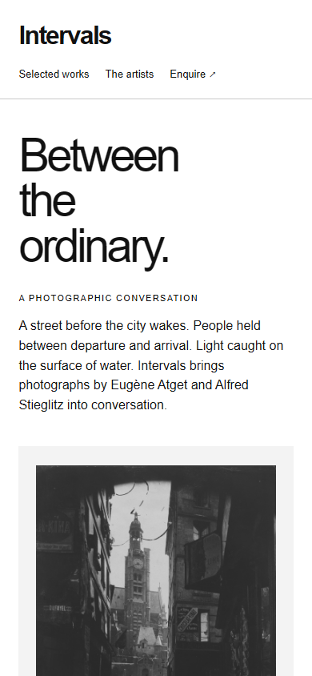
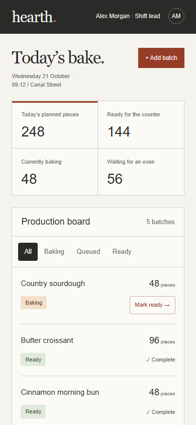
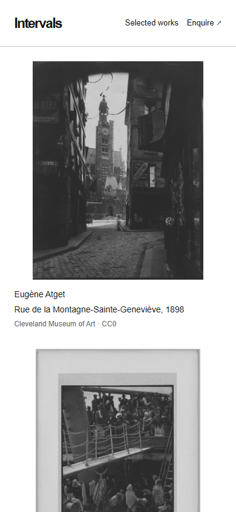
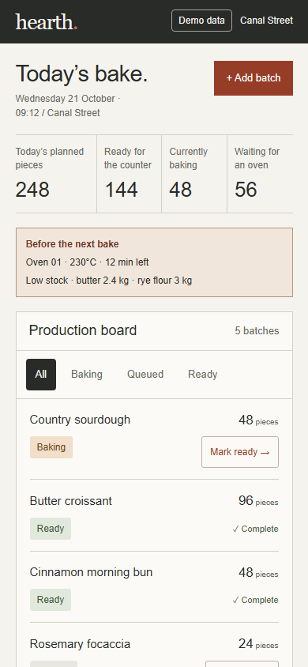

intervals · Before

willow · Before

noor · Before
hearth · Before

intervals · After

willow · After
noor · After
hearth · After

Original phone compositions above; revised compositions below. Same facts and images. This is a separate before/after, not a new ranking against unchanged rivals.



